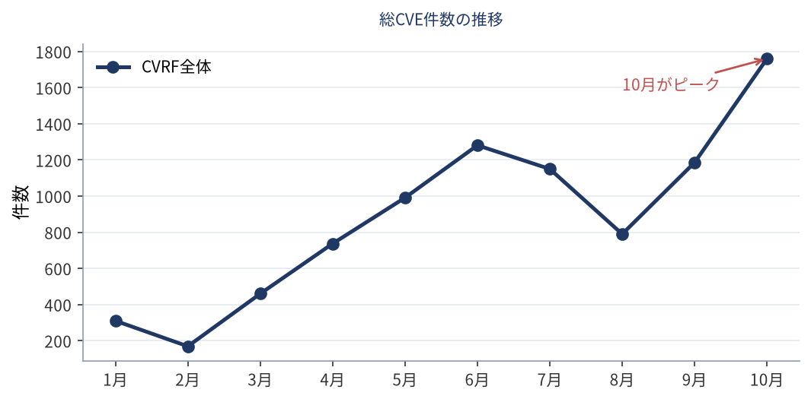
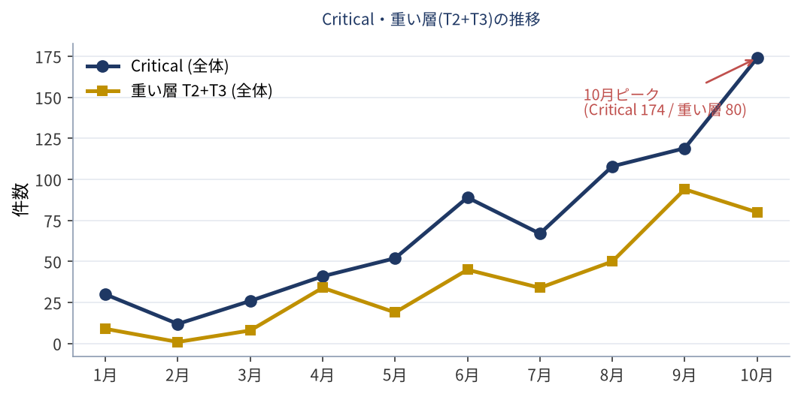
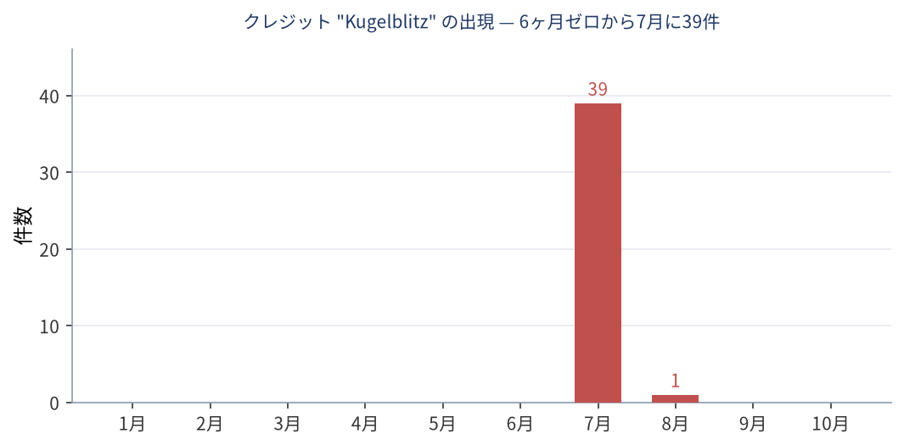
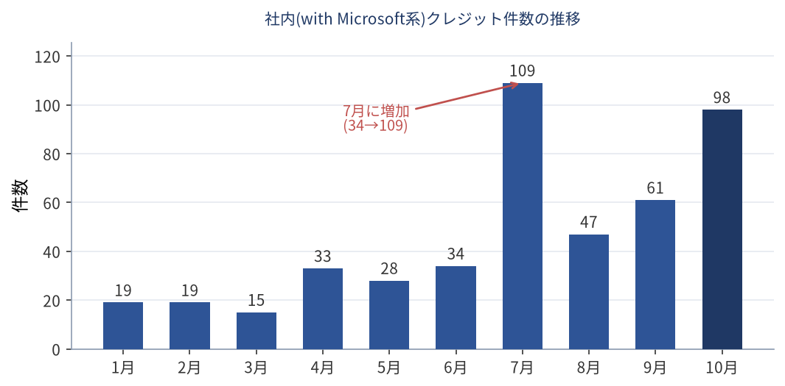

技術レポート（機械生成の事実 + 人間の解釈）
フロンティアAIによる脆弱性発見の急増
2026年10月時点の状況分析と、脆弱性対応にあたる実務者への示唆
脆弱性・パッチ対応の実務者および意思決定者
本レポートの構成と日付について 本レポートは、自動監視スクリプトが生成した事実記録（数値・表・グラフ）に、人間の解釈を差し込んで構成される。 事実データ取得日: 2026-10-15（スナップショットとして凍結） 解釈（本文分析）更新日: 2026-10-14 ※事実は自動、解釈は人間が別途更新する。両者の日付が離れている場合は、解釈が最新の事実を反映していない可能性がある。 |
MSRC の事後改訂について 本レポートは 2026-10-15 確定値に基づく。MSRC は過去月を事後改訂しており（例：6月 CVE 1281→1205）、改訂後データでは異なる結果に見える場合がある。改訂記録は別途保持。 |
【免責・出典】 • 本レポートは、脆弱性対応にあたる実務者を投影した仮想的な書き手による非公式な分析であり、特定の個人・組織の見解ではない。 • 事実データの出典：Microsoft MSRC CVRF、CISA KEV、その他公開情報。 • 分析の生成には AI（大規模言語モデル）を用いている。事実は可能な範囲で検証しているが、正確性・完全性を保証しない。重要な判断は一次情報で確認すること。 • 事実は自動更新されるが解釈は随時更新であり、両者の日付が離れている場合がある（ヘッダ参照）。 • 鮮度：本レポートの事実は 2026-10-15 時点。KEV や PoC 状況は時々刻々変わるため、最新は一次情報を参照。 |
【中立性に関する注記】 本レポートの分析生成には Anthropic 社の AI（Claude）を用いている。本レポートは同社の Project Glasswing 等に言及するが、これは公開情報に基づく中立的な記述を意図したものであり、特定企業を推奨・擁護するものではない。読者は一次情報に当たり、独自に判断されたい。 |
要旨
2026年10月の Patch Tuesday は、本レポートの観測範囲（2026年1月以降）で総数が最も多い月になった。CVE 全体は 1,186 から 1,760 へ、MS本体相当は 975 から 1,419 へ増えた。本体相当のうち Microsoft が採番した CVE は 973 から 1,417 へ増え、その差は本体相当の増加 444件と同じである。本体相当 1,419件のうち 1,411件は 10月13日の月例で初めて公開されたものである。
一方で、件数と同じ向きに動かなかったものがある。変更管理を要する重い層は、本体相当で 93 から 79 へ減った。 Critical は全体では 119 から 174 へ増えたが、本体相当では 114 から 77 へ減っている。 全体の Critical のうち 97件は除外の側（Azure Linux のパッケージ勧告）にある。
ゼロデイ（Microsoft の定義で、悪用が確認されたもの、または公開済みのもの）は3件で、悪用が確認されたものは1件である。 その1件は深刻度 Important で、Critical ではない。
結論（一言） 総数は観測範囲で最多になったが、重い層と本体相当の Critical は減った。件数の増え方と、対応の重さ・危険度の動きは一致しない。 |
用語解説：「CVRF全体」と「MS本体相当」 CVRF全体 — MSRC の月次文書に載る全 CVE。Edge/Chromium、Azure Linux のパッケージ勧告、Azure クラウドの勧告を含む。報道各社の集計が一致しないのは、この母集団の切り方が異なるためである。 MS本体相当 — CVRF全体から、影響製品がすべて Azure Linux のパッケージであるもの、またはすべて Edge/Chromium であるものを除いた母集団。Azure クラウドの勧告は本体相当に含まれる（今月の azure_cloud 14件は本体相当の側）。影響製品に Microsoft の製品が混在するものも本体相当に入る。分離は製品識別子（ProductID を製品名へ解決）で行い、CVE のタイトル文字列に依存しない。今月は本体相当 1,419 / 除外 341 で、除外の 341件はすべて Azure Linux である。Edge/Chromium の勧告は今月の CVRF に1件も無い。 |
分析：最多の月に、重い層は減った
今月は総数が最多になった。そのうえで、本体相当の中身と、増えなかった軸を確かめた。
|
2026年9月 |
2026年10月 |
CVE 全体 |
1,186 |
1,760 |
MS本体相当 |
975 |
1,419 |
クレジットあり |
926 |
1,334 |
Critical（全体／本体相当） |
119／114 |
174／77 |
重い層（T2+T3・本体相当） |
93 |
79 |
ゼロデイ |
2（2件とも悪用確認） |
3（悪用確認1・公開済み2） |
本体相当の増加 444件の所在を、凍結の前に確かめた。本体相当 1,419件のうち 1,417件は Microsoft が CNA（採番した組織）で、1,411件は 10月13日の月例で初版が出ている。月例より前に出たのは 8件（いずれも 10月中）で、前月以前に出て10月に改訂されたものは無い。
増え方は特定の製品に偏っていない。製品カテゴリでは Windows のサービス（314 → 478）、カーネルとドライバ（147 → 271）、Office（125 → 172）、.NET と開発ツール（22 → 62）が増え、SQL/Dynamics は 64 から 27 へ減った。製品の単位では Excel（32 → 69）、DNS Server（4 → 52）、Windows Kernel（11 → 46）、Windows Installer（5 → 38）、Win32k（2 → 36）が目立つ。増えた理由は本レポートでは分からない。 増えたという事実だけを記録する。
除外の側も 211 から 341 へ増えた。Azure Linux の勧告は 187 から 341 で、CNA は Linux（172件）、apache（80件）などである。
悪用されたのは Critical ではない — 四か月続いた
今月、悪用が確認されたのは CVE-2026-96951（Windows Shell のセキュリティ機能のバイパス） の1件で、深刻度は Important である。今月の Critical 174件のうち、悪用が確認されたものは1件も無い。
悪用確認があり、そのどれも Critical でなかった月は、7月から10月まで4か月続いている。ただし5月には Critical の悪用確認が1件あった。Critical が悪用されないということではない。 Critical だけを見る運用では、この4か月の悪用確認をすべて取り落とす、ということである。
残る2件は公開済みで、悪用は確認されていない。
CVE-2026-108398（.NET Framework のセキュリティ機能のバイパス、Important） — ローカルで、認証済みの攻撃者による。
CVE-2026-92707（MessagePack-CSharp のサービス拒否、Moderate） — MessagePack-CSharp は、Visual Studio に含まれるオープンソースの部品で、分類の規則により本体相当に入っている。影響製品には Visual Studio 2022・2026 のほか、.NET の SignalR 用の MessagePack パッケージが挙がっており、Microsoft の製品が混在するため、規則（混在は本体相当）で本体相当に数えている。採番したのは Microsoft ではなく GitHub である。
総数と重さ：同じ向きに動かなかったもの
件数が増えた月に、対応の重さを表す軸は同じ向きに動かなかった。
重い層（T2+T3・本体相当）は 93 から 79 へ減った。 本体相当に占める比率は 9.5% から 5.6% である。
本体相当の Critical は 114 から 77 へ減った。 その内訳は遠隔コード実行 59件・権限昇格 14件・なりすまし 3件・情報漏えい 1件で、合計 77件である。
全体の Critical が 174 へ増えたのは、除外の側の Critical が 5 から 97 へ増えたためである。 除外の側の Critical 97件の CNA は Linux が 89件で、すべて Azure Linux のパッケージ勧告である。
「CVE 全体の Critical」だけを見ると、今月は重い月に見える。 本体相当に限ると、Critical も重い層も前月より少ない。どちらの母集団の数字かを確かめずに Critical の件数を比べないこと。
示唆と推奨アクション
以下は本レポートの分析に基づく推奨であり、確定した規制要求ではない。規制当局の個別の監督上の期待については、一次情報での確認を前提とする。
1. 監視指標（前号からの継続）
「CVE件数」を脅威指標として使わない。今月は前月から 48.4% 増えたが、重い層は減り、本体相当の Critical も減った。件数の増減は、防御負荷とも危険度とも同じ向きに動いていない。
変更管理を要する層の月次増減を追う。今月は本体相当で 93 から 79 へ減った。総数が最多の月でも、適用計画の重さは前月より軽いことがある。
ただし件数は作業量ではない。 対象が何製品に分散しているかで手間は変わる。本レポートは製品単位の分散を測っていない（前号と同じ限界）。
2. トリアージを深刻度ラベルから切り離す（前号からの継続）
今月の Critical 174件に悪用確認は無い。悪用が確認された1件は Important である。悪用確認のあった月のうち、7月から10月までの4か月は、どれも Critical ではなかった。
一方で5月には Critical の悪用確認があった。深刻度ラベルの上下で優先度を決めること自体が当てにならない、というのが4か月の記録の意味である。
移行先は前号と同じく、CISA KEV と EPSS と資産の到達性の組み合わせ。
Critical の件数は母集団を確かめてから読む。 今月の全体の Critical 174件のうち 97件は Azure Linux の勧告である。
3. 緊急パッチ SLA
今月の悪用確認1件（CVE-2026-96951）は、10月15日の取得時点で CISA KEV に収載されている。適用は当日に始める対象として扱う。是正期限は本レポートでは取得していない。 KEV の記載で確かめること。
攻撃前提条件はベンダーの CVSS ベクタでは次のとおり。 ネットワーク経由で、事前の権限は不要、攻撃難易度は低い。ただしユーザー操作を要する。 影響はセキュリティ機能のバイパスで、記載上の原因はコマンドインジェクションである。CVSS 基本値は 8.8、影響製品は 31件である。
時間的指標は「機能する実証コードあり」（E:F）で、CVRF の悪用状況の記載（悪用を検知）と一致している。
4. 自分の絞り込み規則を点検する（前号からの継続）
前号で、KEV / EPSS の照合対象に「悪用が確認されている」を条件として足した。今月の照合対象は 1,164件（前月 786件）で、悪用確認の1件は対象に入り、KEV の新規収載として検出された。なお、この1件は外部クレジットがあるため、前号より前の条件でも対象に入っていた。
公開済みだけのゼロデイは、照合の条件に入っていない。 今月の CVE-2026-92707 は照合の対象外で、EPSS の値を持たない。もう1件の公開済み（CVE-2026-108398）は別の条件で対象に入っている。本号では条件を変えていない。
外部の脅威情報と自組織の資産を突き合わせるときは、突き合わせの対象から何が外れているかを、毎月の数字で確かめること。
5. Edge/Chromium 自動更新（前号からの継続）
今月の CVRF には Edge/Chromium の勧告が1件も無い（前月は 24件）。理由は本レポートでは分からない。CVRF に載らないことは、Edge に修正が無かったことを意味しない。
本項の要点は件数に依存しない。Electron/CEF を埋め込んだアプリ（Teams、Slack、VS Code など）は、ブラウザの自動更新の恩恵を受けない。 SBOM でこれらの依存を洗い出す意味は、件数が0の月でも変わらない。
6. AI 依存の BCP（前号から継続）
AI をワークフローに組み込む場合、最上位モデルへの依存は BCP の対象と位置づけ、モデル多重化とフォールバック設計を標準とする。
実データ内訳 — 2026年10月 Patch Tuesday
以下は MSRC CVRF v3.0 から取得した一次データの集計である（凍結スナップショット 2026-10-15）。母集団は「CVRF全体」と、影響製品がすべて Edge/Chromium またはすべて Azure Linux のものを除いた「MS本体相当」を併記する。Azure クラウドは除外していない — 今月の azure_cloud 14件は本体相当に入る。数値・表は state から自動生成で、以下は各表に付す事実ベースの要点コメントである。
表1. 深刻度別（母集団2種の併記）
深刻度 |
CVRF全体 |
(%) |
MS本体相当 |
(%) |
Critical |
174 |
10% |
77 |
5% |
Important |
1433 |
81% |
1338 |
94% |
Moderate |
128 |
7% |
1 |
0% |
Low |
23 |
1% |
1 |
0% |
Unrated |
2 |
0% |
2 |
0% |
合計 |
1760 |
100% |
1419 |
100% |
表1（深刻度別）の要点
Critical は前月の 119件から 174件へ増え、観測範囲で最多である。CVRF 全体に占める比率は 10.0% から 9.9% で、ほぼ変わらない。174件のうち 97件は除外の側（Azure Linux のパッケージ勧告。CNA は Linux が 89件）で、本体相当の Critical は 77件である。 本体相当の Critical は前月の 114件から減り、本体相当に占める比率は 11.7% から 5.4% へ下がった。77件の内訳は遠隔コード実行 59件・権限昇格 14件・なりすまし 3件・情報漏えい 1件で、悪用が確認されたものは1件も無い。
表2. 再起動クラス別（実務負荷の軸）
クラス |
内容 |
CVRF全体 |
MS本体相当 |
T3 |
段階展開必須（Boot/Crypto） |
8 |
7 |
T2 |
変更管理・メンテ枠が必要 |
72 |
72 |
T0/T1 |
自動更新・定常パイプライン |
1680 |
1340 |
表2（再起動クラス別）の要点
T2 と T3 を合わせた「重い層」は本体相当で 79件（T2 72件・T3 7件）で、前月の 93件から減った。前々月は 42件である。本体相当が 975 から 1,419 へ増えたため、比率は 9.5% から 5.6% へ下がっている。総数が最多の月に、重い層は増えていない。 ただし本レポートは、この 79件が何製品に分散しているかを測っていない。件数が減ったことをもって前月より軽いと断ずることはできない。
表3. 発見者大分類（CVRF全体）
区分 |
件数 |
(%) |
備考 |
クレジット無し |
426 |
24% |
自動化を含む可能性（断定不可） |
外部研究者（実名） |
1000 |
57% |
実名の外部発見者 |
匿名（Anonymous） |
167 |
9% |
名乗り出た匿名 |
社内（with Microsoft等） |
98 |
6% |
Kugelblitz/MORSE/WARP・ACS等を含む |
ハッシュ識別子 |
69 |
4% |
MSが匿名化した識別子（正体不明） |
表3（発見者大分類）の要点
外部クレジットは 705件から 1,000件へ、クレジットのない CVE は 260件から 426件へ、匿名は 92件から 167件へ増えた。全体に占めるクレジット無しの比率は 21.9% から 24.2% である。どの区分も総数と同じ向きに増えており、この表から発見の傾向の変化は読み取れない。 増えたという事実だけを記録する。
表4. Critical脆弱性の発見者内訳（集約・実名なし）
発見主体 |
Critical件数 |
傾向 |
クレジット無し |
98 |
自動化の可能性（断定せず） |
外部研究者（実名） |
48 |
Criticalの多数派 |
匿名（Anonymous） |
13 |
— |
社内（ACS/WARP/MORSE等） |
8 |
少数（Networking/Hyper-V中心） |
ハッシュ識別子 |
7 |
— |
Kugelblitz（Edge・参考） |
0 |
Criticalには出現しない（面のみ） |
件数のみ（個人実名は事実データに保存しない）。上4〜5行はバケット別で合計=Critical総数。Kugelblitz 行は横断参考（加算しない）。個別の研究者名・CVE例は解釈側に散文で記載。
表4（Critical脆弱性の発見者内訳）の要点
Critical のうちクレジットのないものは、前月の 10件から 98件へ増えた。Critical に占める比率は 8.4% から 56.3% である。ただし 98件のうち 97件は除外の側（Azure Linux のパッケージ勧告）で、本体相当の Critical でクレジットのないものは1件である。 この表は CVRF 全体を数えているため、除外の側の Critical が増えた月には、クレジット無しの行がそのまま膨らむ。前号までの規律のとおり、謝辞の不在から発見主体を推論しない。
表5. 製品カテゴリ別（CVRF全体）
カテゴリ |
件数 |
(%) |
Win Services/Components |
478 |
27% |
Azure Linux（再掲載） |
341 |
19% |
Kernel/Driver |
271 |
15% |
Office/Word/Excel/PPT |
172 |
10% |
Networking |
134 |
8% |
その他 |
62 |
4% |
.NET/Dev |
62 |
4% |
Graphics/Media |
54 |
3% |
Microsoft (other) |
36 |
2% |
RDP/Remote |
34 |
2% |
Auth/Identity |
31 |
2% |
SQL/Dynamics |
27 |
2% |
Hyper-V/Virtual |
26 |
1% |
Azure/Cloud |
14 |
1% |
Exchange |
10 |
1% |
Boot/Crypto (T3) |
7 |
0% |
SharePoint |
1 |
0% |
表5（製品カテゴリ別）の要点
この表は前号から製品識別子ベースの分類（v2）で作られており、今月で2点目になる。 前月と並べられるのはこの2点だけである。増えたのは Windows のサービス（+164）、Azure Linux（+154）、カーネルとドライバ（+124）、Office（+47）、.NET と開発ツール（+40）などで、SQL/Dynamics（-37）と Edge/Chromium（-24）は減った。「その他」は 40件から 62件へ増えた。「その他」は範囲内だが分類規則を持たないものの一覧で、規則を足すべき対象として読む。
8月以前の表5 とは並べないこと。 分類器の版が違う。
補遺：「AI関連」を示唆するクレジットの棚卸し
「Kugelblitz」というクレジット名は、7月に 39件、8月に 1件、9月と10月は 0件である。Critical には一度も現れていない。
この推移は解釈できない。 言えるのは「その名前が2か月続けて出ていない」ことだけである。なお今月は、Edge/Chromium の勧告そのものが CVRF に1件も無い。
この種のクレジット名から実体を推定しない、という規律は変わらない。数えたのはクレジット文字列の一致だけである。
過去データとの比較 — 2026年1月〜10月の推移
月をまたぐ比較の条件が揃っているのは、8月・9月・10月の3か月である。3か月とも製品識別子ベースの分類器（v2）で計算され、Patch Tuesday から同じ距離（2日後）で凍結されている。7月以前は分類器が異なる。推移表から「MS本体相当」の列を落としているのはこのためで、以下の図で並べている軸はいずれも分類器に依存しない。
推移表（取得ラグに頑健な実数のみ）
月 |
CVE全体 |
Critical |
重い層(T2+T3) |
Kugelblitz |
社内(MS) |
1月 |
310 |
30 |
9 |
0 |
19 |
2月 |
169 |
12 |
1 |
0 |
19 |
3月 |
460 |
26 |
8 |
0 |
15 |
4月 |
737 |
41 |
34 |
0 |
33 |
5月 |
991 |
52 |
19 |
0 |
28 |
6月 |
1281 |
89 |
45 |
0 |
34 |
7月 |
1150 |
67 |
34 |
39 |
109 |
8月 |
790 |
108 |
50 |
1 |
47 |
9月 |
1186 |
119 |
94 |
0 |
61 |
10月 |
1760 |
174 |
80 |
0 |
98 |
※「CVE本体（MS本体相当）」の列は載せない。母集団の分類器を 2026-Aug から v2（影響製品ベース）に替えており、v1（タイトルベース）で凍結した月と同じ列に並べると、分類器を替えたことが「MS本体相当の急変」という推移に見えるため。当月の本体側の内訳は上の表に載せている（単月なので版の混在は起きない）。

図1: 総CVE件数の推移（CVRF全体）
図1（総CVE件数）の解釈
今月の 1,760件は、観測範囲で最も多い（次は6月の 1,281件）。ただしこの曲線は防御負荷とも危険度とも対応しない。今月の増加は本体相当でも除外の側でも起きており、本体相当の側では重い層が減っている。

図2: Critical件数・重い層(T2+T3)の推移
図2（Critical・重い層）の解釈
今月は2本の線が逆に動いた。 Critical（全体）は 174件で観測範囲の最多、重い層（全体）は 9月の 94件から 80件へ減った。Critical の増加は除外の側の 97件によるもので、本体相当の Critical は減っている。この図は CVRF 全体を描いているため、Azure Linux の Critical の増減がそのまま線に出る。

図3: クレジット「Kugelblitz」の月次出現
図3（Kugelblitz）の解釈
7月に突出した後、8月に 1件、9月と10月は 0件。今月は Edge/Chromium の勧告そのものが CVRF に無い。曲線の形から主体の活動を読み取ることはできない。

図4: 社内(with Microsoft系)クレジット件数の推移
図4（社内発見）の解釈
Microsoft 社内発見のクレジットは 61件から 98件へ増えた。クレジットあり全体に占める比率も 6.6% から 7.3% へ上がっている。前月は件数と比率が逆向きだったが、今月は同じ向きである。 この図は件数を描いている。
推移から読み取れること（要約） 総数と Critical（全体）は観測範囲で最多になった。重い層は減った。 Critical の増加は除外の側（Azure Linux）で起きている。本体相当の Critical は減った。 「MS本体相当」と表5 は、8月から10月の範囲でしか比較できない。 社内発見は件数と比率が同じ向きに増えた。図は件数を描いている。 |
KEV / EPSS — 即応の優先度づけ
以下は対象CVE（T2/T3 ∨ Critical ∨ 外部研究者クレジット ∨ 悪用確認）を CISA KEV・FIRST EPSS と照合した結果。KEV = CISA が悪用を確認した離散的事実（通知トリガー。Microsoft 自身の悪用フラグ＝本レポートの「悪用確認」とは別の出典）。EPSS = 悪用確率の推定（取得時点の値・日々変動・参考）。数値から発見主体・因果は断定しない。
即応対象 — CISA KEV 収載（取得 2026-10-15）
CVE |
製品名 |
深刻度 |
再起動クラス |
CVE-2026-96951 |
Windows Shell |
Important |
T0/T1 |
EPSS 上位 — 悪用確率の推定（取得時点 2026-10-14）
CVE |
製品カテゴリ |
EPSS |
パーセンタイル |
CVE-2026-70049 |
Microsoft (other) |
0.0227 |
82.7% |
CVE-2026-88091 |
Win Services/Components |
0.0214 |
81.6% |
CVE-2026-100214 |
SQL/Dynamics |
0.0183 |
78.4% |
CVE-2026-96186 |
Graphics/Media |
0.0165 |
76.0% |
CVE-2026-87692 |
Exchange |
0.0159 |
75.1% |
CVE-2026-85900 |
Office/Word/Excel/PPT |
0.0152 |
74.0% |
CVE-2026-96951 |
Win Services/Components |
0.0151 |
73.8% |
CVE-2026-70035 |
.NET/Dev |
0.0127 |
69.2% |
CVE-2026-83520 |
.NET/Dev |
0.0127 |
69.2% |
CVE-2026-70082 |
Networking |
0.0120 |
67.6% |
CVE-2026-83635 |
Networking |
0.0120 |
67.6% |
CVE-2026-83665 |
Networking |
0.0120 |
67.6% |
CVE-2026-83655 |
その他 |
0.0120 |
67.6% |
CVE-2026-83855 |
Win Services/Components |
0.0120 |
67.6% |
CVE-2026-105723 |
Win Services/Components |
0.0115 |
66.2% |
※EPSS は毎日更新され値が変動する。上表は取得時点（2026-10-14）のスナップショットであり、単独のトレンド指標として用いない。通知トリガーには KEV のみを使う（EPSS は使わない）。
※製品名（KEV表）・製品カテゴリ（EPSS表）は CVRF（2026-10-15 凍結スナップショット）由来。KEV 収載状況・EPSS 値とは別ソース・別時点である。カテゴリは表5と同一の分類による。製品名/カテゴリの数値から発見主体・因果は断定しない。
別紙：調査手順・出典・アカウンタビリティ記録
本別紙は、本編の結論に至る調査過程を、途中で棄却・修正した仮説を含めて記録する。分析の再現可能性と説明責任の確保を目的とする。
1. 調査の目的と問い
本号の問いは前号から引き継いでいる — 月次の脆弱性データから、対応の負荷と実際の危険度について何が言えるか。加えて本号は、総数が最多になった月に、その増加がどの母集団のどこから来たかを、凍結の前に確かめた回である。
2. 情報源
本号は一次データのみに依拠しており、報道等の二次情報を参照していない。
MSRC CVRF API v3.0 — 月次のセキュリティ更新を CVE 単位の構造化データで提供。発見者クレジット、深刻度、悪用状況、対象製品、CVSS ベクタ、FAQ を含む。
CISA KEV カタログ — 悪用が確認された脆弱性の一覧。当月の CVE との突合に使用。
FIRST EPSS — 30日以内に悪用活動が観測される確率の推定。
3. データ取得方法
MSRC CVRF API から取得担当者のローカル環境で一次データを取得し、Patch Tuesday の2日後（10月15日 06:43）に凍結した。8月・9月と同じ距離である。凍結の前日（10月14日 07:01）の日次取得と比べると、本体相当 1,419件・クレジットあり 1,334件・Critical（全体 174件／本体相当 77件）・重い層・ゼロデイ3件は変わらなかった。総数は 1,759件から 1件増えた（除外の側の CVE-2026-95838。初版は 10月14日）。動いたのは、本体相当の1件の深刻度（未評価 → Important）と、発見者区分の数件（外部 998 → 1,000、匿名 169 → 167）である。前日の日次取得は製品カテゴリを旧版の分類で計算しているため、製品カテゴリは比べていない。KEV は凍結と同じ日（10月15日）に取得した。EPSS の日付は 2026-10-14 である（FIRST の日付は UTC で決まり、取得時点の最新が 10月14日付だった）。
4. 分析手順（時系列）
Patch Tuesday の2日後に一次データを取得した。
前日の日次取得と比べ、本体相当・クレジットあり・Critical・重い層・ゼロデイが動いていないことを確かめた。総数は除外の側で1件増え、深刻度と発見者区分は数件動いた（第3節）。
総数が前月から 48.4% 増えたため、凍結の前に、増加が本体相当と除外のどちらにあるか、CNA・初版の日付・製品カテゴリ・製品の別に確かめた（第5節・棄却②）。
凍結した。
KEV と EPSS を当月の照合対象に対して取得した。
ゼロデイ3件について、CVRF の悪用状況・CVSS ベクタ・説明の原文を確認した。
前号の表1要点の数え直しを再実行し、同じ内訳が出ることを確かめた（第5節・訂正①）。
5. 調査過程で棄却・修正した指標【重要】
説明責任の観点から、当初採用したが後に棄却・修正した判断と、訂正を記録する。
訂正① 前号 表1要点の「Critical 114件の内訳」。 前号は、本体相当の Critical 114件について「その内訳は遠隔コード実行 82件・権限昇格 27件・情報漏えい 2件」と書いた。3つの数字はそれぞれ正しいが、合計は 111件で、114件に3件足りない。 残る3件は、なりすまし 1件（Azure Cosmos DB）、セキュリティ機能のバイパス 1件（Windows Hello）、影響の記載が無いもの 1件（CMS AuthEnvelopedData の処理。CNA は OpenSSL）である。正しい内訳は次のとおり。
影響 |
件数 |
遠隔コード実行 |
82 |
権限昇格 |
27 |
情報漏えい |
2 |
なりすまし |
1 |
セキュリティ機能のバイパス |
1 |
影響の記載なし |
1 |
**合計** |
**114** |
数え方は前号の表1と同じ母集団（9月の凍結値の本体相当 Critical 114件）で、各 CVE を CVRF の影響の記載で分類した。影響の記載は凍結値に含まれないため、凍結値の対象 CVE の一覧を基準に CVRF から引き、Critical 119件・本体相当 114件が凍結値と一致することを確かめた。影響が2種類以上記載された CVE は無い。この数え直しは 10月15日に再実行し、同じ内訳が出た。
誤りの原因は、原稿の段階で3分類だけを数えて挙げ、その合計を 114件と突き合わせなかったことである。 同じ段落の「悪用が確認されたものは1件も無い」は、数え直しでも0件で変わらない。
棄却② 「10月の増加は Azure Linux の勧告が積み上がったもの」という見立て。 総数が前月から 48.4% 増えたのを見て、当初は、Azure Linux の勧告が凍結までの間に積み上がる分が増えたと考えた。確かめると、そうではなかった。 増えた 574件のうち 444件は本体相当の側だった。本体相当のうち Microsoft が採番したものは 973 から 1,417 へ増えており、本体相当の 1,411件は 10月13日の月例当日の初版だった。除外の側も増えている（211 → 341）が、増加の大半ではない。分類器の確認として、同じ分類器で前月の本体相当 975件をカテゴリ別まで再現できること、本体相当に Azure Linux と Edge/Chromium の勧告が入っていないことも確かめた。
記録③ 母集団の境界にあたる2件。 規則どおりに本体相当に入っているが、本体相当と言い切れない CVE が2件あった。
CVE-2026-92707（MessagePack-CSharp） — Visual Studio に含まれるオープンソースの部品の勧告で、採番は GitHub。影響製品に Visual Studio と .NET のパッケージが混在するため、「混在は本体相当」の規則で本体相当に入った。今月のゼロデイ（公開済み）の1件でもある。
CVE-2026-62840（Linux Kernel の権限昇格） — 影響製品は他社の Linux ディストリビューションと、Microsoft の MANA ネットワークドライバ。Azure Linux のパッケージではないため、本体相当に入った。
2件を除いても本体相当は 1,417件で、本号の見え方は変わらない。前号の訂正①にある影響の記載の無い1件（CVE-2026-34182、OpenSSL）も、Visual Studio と Azure Linux のパッケージが混在して本体相当に入った同じ形である。10月号は前号と同じ規則（v2）のまま凍結した。 規則の見直しは材料として記録し、本号の数値には反映していない。
記録④ 公開済みだけのゼロデイは、KEV / EPSS の照合対象に入らない。 照合の条件は「重い層（T2/T3）または Critical または外部クレジットあり、または悪用確認」で、公開済みかどうかは条件に無い。今月の CVE-2026-92707 はどの条件にも当たらず、照合の対象外で、EPSS の値を持たない。悪用が確認された CVE-2026-96951 は対象に入り、KEV の新規収載として検出された。
継承⑤ 同一文書内での悪用状況の記載。 前号は、悪用が確認された CVE の中に、CVSS の時間的指標が Threats の記載と一致するものとしないものが混在していたことを記録した。今月の悪用確認1件（CVE-2026-96951）は、時間的指標が「機能する実証コードあり」（E:F）で、Threats の「悪用を検知」と一致している。1件の一致から、この欄が使えるようになったとは言えない。本レポートの悪用フラグは引き続き Threats から導出している。
継承⑥ 状況証拠だけで実体に結びつけない。 7月号が「Kugelblitz」を特定の内製 AI ツールと断定し、一次情報による裏取りで撤回した。この規律は本号でも生きている。同名のクレジットが2か月続けて0件であることについて、活動の停止も継続も主張していない。
6. 最終的に依拠した根拠と、その限界
依拠した根拠（確度：高）
凍結値は一次データからの機械集計であり、凍結の前日の日次取得と比べて、本体相当・クレジットあり・Critical・重い層・ゼロデイが動いていないことを確認済み（深刻度と発見者区分は数件動いた）。
今月も母集団の分離は製品識別子ベースで、製品識別子はすべて解決した（未解決0件）。除外の 341件はすべて Azure Linux で、Edge/Chromium は0件。
本体相当の増加の所在（CNA・初版の日付・製品カテゴリ）は、凍結値と同じ版の CVRF から確かめた。
悪用確認1件の攻撃前提条件（ネットワーク経由・事前の権限不要・ユーザー操作を要する・攻撃難易度は低い）は、CVRF の CVSS ベクタに基づく。
限界（確度：未確定・要注意）
本体相当が増えた理由は分からない。 増えた場所は確かめたが、なぜ増えたかは CVRF からは読めない。
重い層の件数は測っているが、対象製品の分散度合いは測っていない。 件数が減ったことをもって作業量が減ったとはできない。
母集団の境界の2件は、規則どおりの分類である。 規則そのものの妥当性は本号では判断していない（第5節・記録③）。
公開済みだけのゼロデイは、KEV / EPSS の照合の対象外である（第5節・記録④）。
今月 Edge/Chromium の勧告が CVRF に無い理由は不明。
KEV の是正期限は本号では取得していない。 悪用確認1件の実際の攻撃事例・観測された手口も確認していない。攻撃前提条件は CVRF の CVSS ベクタによる評価で、実地で観測したものではない。
EPSS は 2026-10-14 付の値である。 毎日変わる。
7. 再現手順
本号の数値は、公開リポジトリ msrc_monitor の収集・凍結ツールで再現できる（要 Python 3.12、MSRC API に到達可能なネットワーク）。なお MSRC は過去月を事後改訂するため、完全に同一の値が再現されるとは限らない。凍結後の改訂は別途記録している。
当月の一次データ取得: python collect.py 2026-Oct
取得値の確認と凍結（凍結は人間が実行し、既に凍結済みの月は拒否される）: python freeze_month.py 2026-Oct --dry-run のうえ python freeze_month.py 2026-Oct
KEV/EPSS の突合: python enrich.py 2026-Oct
発見者クレジットの集計（CVE 単位・重複排除済み）: state/2026-Oct.json の credit_counts / finder_bucket を参照
前号の表1要点の数え直し: python docs/measure/sep_critical_impact.py
解釈の散文は月ごとに interpretation/<年-月>/ に分かれており、当月以外のものを混ぜてビルドすることはできない。
確度の階層（本レポートの主張の格付け） 【高】 総数と Critical（全体）は観測範囲で最多／本体相当のうち Microsoft の採番は 973 から 1,417 へ増え、本体相当の 1,411件は月例当日の初版／重い層（本体相当）は 93 から 79 へ減った／本体相当の Critical は 114 から 77 へ減り、全体の Critical のうち 97件は Azure Linux／悪用確認は1件で Important、Critical 174件に悪用確認は無い／母集団分離は製品識別子ベースで全件解決した／前号の Critical 114件の内訳は 111件分しか挙げていなかった 【中】 悪用確認のあった月が4か月続けて Critical を含まないという観察（月ごとの件数は1〜2件で、5月には Critical の悪用確認がある） 【未確定】 本体相当が増えた理由／重い層の対象製品の分散度合い／Edge/Chromium の勧告が CVRF に無い理由／Kugelblitz が0件である理由 【要注意】 Critical の件数は母集団によって向きが逆になる（全体は増加、本体相当は減少）／母集団の境界の2件は規則どおりの分類で、規則の妥当性は未判断／公開済みだけのゼロデイは照合の対象外 |
本レポートはAIアシスタント（Claude）との対話を通じて作成された。一次データの取得・実行は取得環境で行われ、数値はその実行結果に基づく。解釈・分析にはAIの寄与が含まれるため、重要な意思決定に用いる際は一次情報での再確認を推奨する。